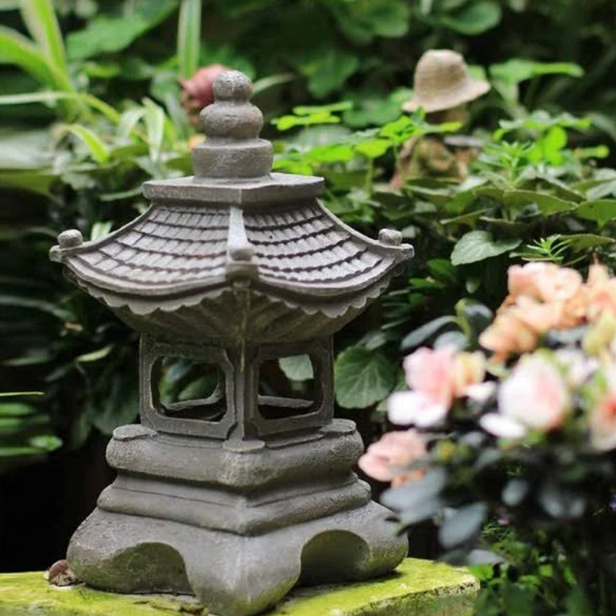
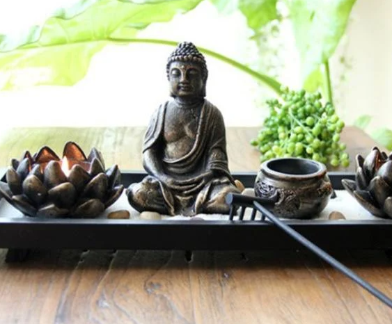
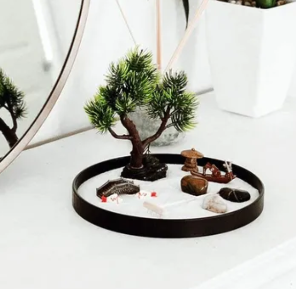

Estatua Estilo Japonés Budda
Ilumine sus tardes con la energía tranquila de esta elegante escultura oriental con acabado de cemento que trae paz a un jardín zen u otro espacio sagrado.
PRECIO: MXN $3,887.99

Ilumine sus tardes con la energía tranquila de esta elegante escultura oriental con acabado de cemento que trae paz a un jardín zen u otro espacio sagrado.
PRECIO: MXN $3,887.99
Ilumine el jardín con esta decoración asiática estilo japonés que cuenta con una linterna interior y exterior
PRECIO: MXN $1,043.00
Decoración del Incienso Vela de Feng Shui Luz del Té Jardín Arena Zen. Disfruta de la antigua tradición cultivando tu propio jardín zen, crea patrones infinitos.
PRECIO: MXN $1,176.73
Nuestro mini jardín zen es una alternativa compacta que se ajusta a cualquier lugar de su casa para incorporar pequeños momentos de la
atención, la tranquilidad, y la iluminación durante todo el día.
PRECIO: MXN $1,985.40
